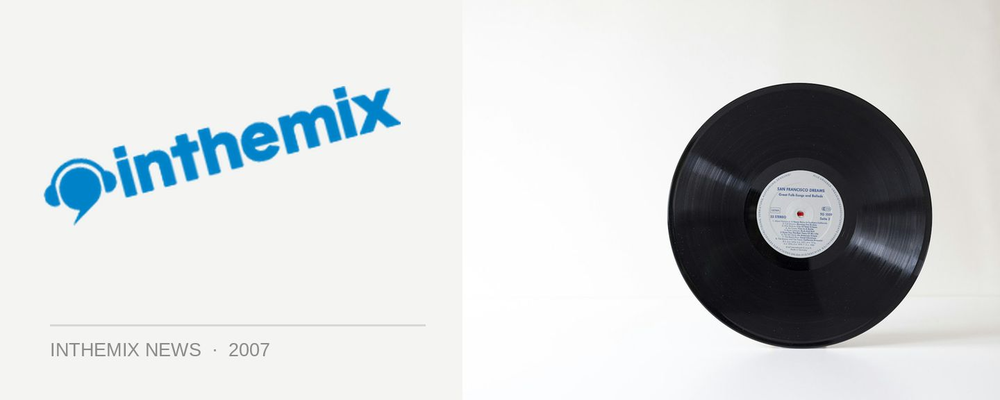

Radiohead’s digital distribution gamble pays off
Are you a mega-successful rock act thinking of giving your major record label the ass, and distributing your own music online? Well it worked for Radiohead, to the value of an estimated $10 million in a single day, so it might just work for you.
Their latest studio album In Rainbows, which continues in their tradition of blurring the lines between rock and avant-garde electronics, saw the much-loved UK act taking the unusual step of shrugging off the shackles of their former record label EMI and going it alone, selling their album through their website. And even more surprisingly, they let their fans name the price that they paid for the new release.
It sure was a gamble, but it turned out to be a successful one. Over one million fans purchased it from the website on its first day of sale alone, and they chose an estimated average price point of $AU9.20. Even though this is around half the price that you’d usually pay for an album on iTunes, the band still would have collected a cool $10 million for a single day’s work. This is because they cut out the middle man that is the record company, which meant they could take home every last cent.
It has been estimated that if they had still been contracted to EMI, Radiohead would have needed to sell ten times that amount of physical albums to collect the same profit. And it’s looking like it’s going to be an increasingly popular way of doing things for the big guns in the music industry, with other artists talking about going down this road including Oasis, Madonna, Jamiroquai and record label hating Trent Reznor who recently bailed from his contract several albums early.
It’s all very well for Radiohead to strike out and go it alone, but how will the changing landscape impact other smaller acts from around the world? Stay tuned.